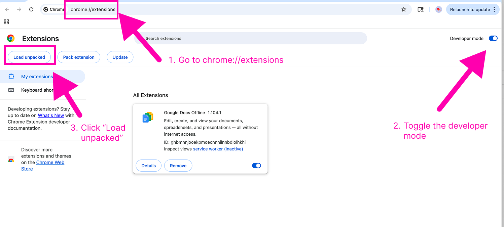
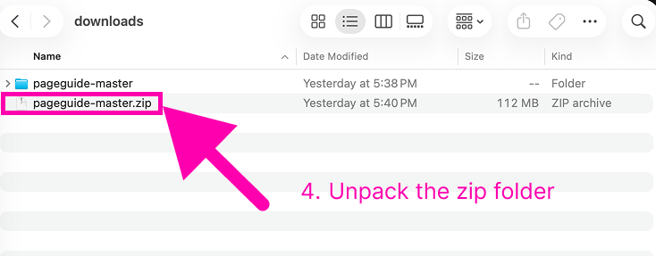
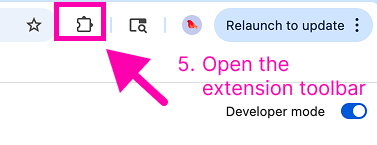
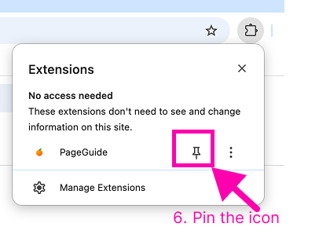
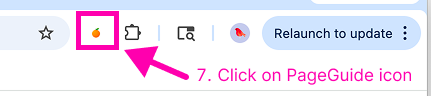

Manual Installation
1. Download
- Download the latest zip file from this repo (
masterbranch).
2. Install
-
1. Open Chrome and go to
chrome://extensions/ - 2. Enable Developer mode (toggle in top right)
-
3. Click Load unpacked

-
4. Select the
pageguidefolder from the downloaded and unpacked zip file
-
5. Click Extension icon

-
6. Pin the extension icon to your toolbar

-
7. Use the extension by clicking the icon in the toolbar

3. Upgrading
- Download the latest zip file
- Unzip and replace the existing
pageguidefolder. - Reload the extension in
chrome://extensions/by clicking the reload button on the extension card.